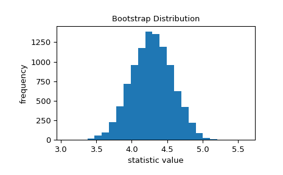

Compute a two-sided bootstrap confidence interval of a statistic.
When method is 'percentile' and alternative is 'two-sided',
a bootstrap confidence interval is computed according to the following
procedure.
Resample the data: for each sample in data and for each of
n_resamples, take a random sample of the original sample
(with replacement) of the same size as the original sample.
Compute the bootstrap distribution of the statistic: for each set of
resamples, compute the test statistic.
Determine the confidence interval: find the interval of the bootstrap
distribution that is
symmetric about the median and
contains confidence_level of the resampled statistic values.
While the 'percentile' method is the most intuitive, it is rarely
used in practice. Two more common methods are available, 'basic'
(‘reverse percentile’) and 'BCa' (‘bias-corrected and accelerated’);
they differ in how step 3 is performed.
If the samples in data are taken at random from their respective
distributions \(n\) times, the confidence interval returned by
bootstrap will contain the true value of the statistic for those
distributions approximately confidence_level\(\, \times \, n\) times.
Parameters:
datasequence of array-like
Each element of data is a sample containing scalar observations from an
underlying distribution. Elements of data must be broadcastable to the
same shape (with the possible exception of the dimension specified by axis).
Changed in version 1.14.0: bootstrap will now emit a FutureWarning if the shapes of the
elements of data are not the same (with the exception of the dimension
specified by axis).
Beginning in SciPy 1.16.0, bootstrap will explicitly broadcast the
elements to the same shape (except along axis) before performing
the calculation.
statisticcallable
Statistic for which the confidence interval is to be calculated.
statistic must be a callable that accepts len(data) samples
as separate arguments and returns the resulting statistic.
If vectorized is set True,
statistic must also accept a keyword argument axis and be
vectorized to compute the statistic along the provided axis.
n_resamplesint, default: 9999
The number of resamples performed to form the bootstrap distribution
of the statistic.
batchint, optional
The number of resamples to process in each vectorized call to
statistic. Memory usage is O( batch * n ), where n is the
sample size. Default is None, in which case batch=n_resamples
(or batch=max(n_resamples,n) for method='BCa').
vectorizedbool, optional
If vectorized is set False, statistic will not be passed
keyword argument axis and is expected to calculate the statistic
only for 1D samples. If True, statistic will be passed keyword
argument axis and is expected to calculate the statistic along axis
when passed an ND sample array. If None (default), vectorized
will be set True if axis is a parameter of statistic. Use of
a vectorized statistic typically reduces computation time.
pairedbool, default: False
Whether the statistic treats corresponding elements of the samples
in data as paired. If True, bootstrap resamples an array of
indices and uses the same indices for all arrays in data; otherwise,
bootstrap independently resamples the elements of each array.
axisint, default: 0
The axis of the samples in data along which the statistic is
calculated.
Choose 'two-sided' (default) for a two-sided confidence interval,
'less' for a one-sided confidence interval with the lower bound
at -np.inf, and 'greater' for a one-sided confidence interval
with the upper bound at np.inf. The other bound of the one-sided
confidence intervals is the same as that of a two-sided confidence
interval with confidence_level twice as far from 1.0; e.g. the upper
bound of a 95% 'less' confidence interval is the same as the upper
bound of a 90% 'two-sided' confidence interval.
Whether to return the ‘percentile’ bootstrap confidence interval
('percentile'), the ‘basic’ (AKA ‘reverse’) bootstrap confidence
interval ('basic'), or the bias-corrected and accelerated bootstrap
confidence interval ('BCa').
bootstrap_resultBootstrapResult, optional
Provide the result object returned by a previous call to bootstrap
to include the previous bootstrap distribution in the new bootstrap
distribution. This can be used, for example, to change
confidence_level, change method, or see the effect of performing
additional resampling without repeating computations.
Pseudorandom number generator state used to generate resamples.
If random_state is None (or np.random), the
numpy.random.RandomState singleton is used.
If random_state is an int, a new RandomState instance is used,
seeded with random_state.
If random_state is already a Generator or RandomState
instance then that instance is used.
Returns:
resBootstrapResult
An object with attributes:
confidence_intervalConfidenceInterval
The bootstrap confidence interval as an instance of
collections.namedtuple with attributes low and high.
bootstrap_distributionndarray
The bootstrap distribution, that is, the value of statistic for
each resample. The last dimension corresponds with the resamples
(e.g. res.bootstrap_distribution.shape[-1]==n_resamples).
standard_errorfloat or ndarray
The bootstrap standard error, that is, the sample standard
deviation of the bootstrap distribution.
Generated when method='BCa' and the bootstrap distribution is
degenerate (e.g. all elements are identical).
Notes
Elements of the confidence interval may be NaN for method='BCa' if
the bootstrap distribution is degenerate (e.g. all elements are identical).
In this case, consider using another method or inspecting data for
indications that other analysis may be more appropriate (e.g. all
observations are identical).
References
[1]
B. Efron and R. J. Tibshirani, An Introduction to the Bootstrap,
Chapman & Hall/CRC, Boca Raton, FL, USA (1993)
We are interested in the standard deviation of the distribution.
>>> std_true=dist.std()# the true value of the statistic>>> print(std_true)4.0>>> std_sample=np.std(data)# the sample statistic>>> print(std_sample)3.9460644295563863
The bootstrap is used to approximate the variability we would expect if we
were to repeatedly sample from the unknown distribution and calculate the
statistic of the sample each time. It does this by repeatedly resampling
values from the original sample with replacement and calculating the
statistic of each resample. This results in a “bootstrap distribution” of
the statistic.
>>> importmatplotlib.pyplotasplt>>> fromscipy.statsimportbootstrap>>> data=(data,)# samples must be in a sequence>>> res=bootstrap(data,np.std,confidence_level=0.9,... random_state=rng)>>> fig,ax=plt.subplots()>>> ax.hist(res.bootstrap_distribution,bins=25)>>> ax.set_title('Bootstrap Distribution')>>> ax.set_xlabel('statistic value')>>> ax.set_ylabel('frequency')>>> plt.show()

The standard error quantifies this variability. It is calculated as the
standard deviation of the bootstrap distribution.
Due to central limit theorem, this normal approximation is accurate for a
variety of statistics and distributions underlying the samples; however,
the approximation is not reliable in all cases. Because bootstrap is
designed to work with arbitrary underlying distributions and statistics,
it uses more advanced techniques to generate an accurate confidence
interval.
If we sample from the original distribution 100 times and form a bootstrap
confidence interval for each sample, the confidence interval
contains the true value of the statistic approximately 90% of the time.
bootstrap can also be used to estimate confidence intervals of
multi-sample statistics. For example, to get a confidence interval
for the difference between means, we write a function that accepts
two sample arguments and returns only the statistic. The use of the
axis argument ensures that all mean calculations are perform in
a single vectorized call, which is faster than looping over pairs
of resamples in Python.
The bootstrap estimate of the standard error is also available.
>>> print(res.standard_error)0.238323948262459
Paired-sample statistics work, too. For example, consider the Pearson
correlation coefficient.
>>> fromscipy.statsimportpearsonr>>> n=100>>> x=np.linspace(0,10,n)>>> y=x+rng.uniform(size=n)>>> print(pearsonr(x,y)[0])# element 0 is the statistic0.9954306665125647
We wrap pearsonr so that it returns only the statistic, ensuring
that we use the axis argument because it is available.